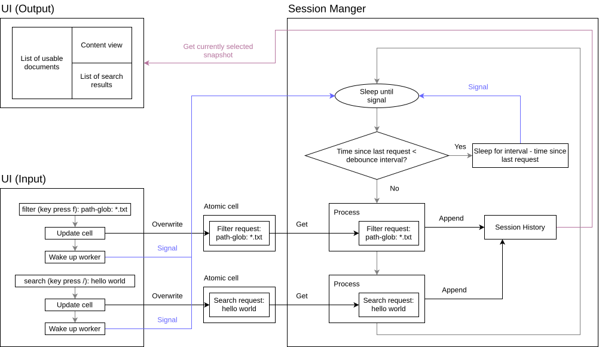

Docfd - Session Manager
Introduction
Session Manager handles the lifecycle of long-running operations (namely searching and filtering) to allow for a responsive asynchronous UI, and centralizes the logic related to management of session history/snapshots to ensure consistency.

Asynchronous UI
Asynchronous UI was introduced to deliver a “search as you type” user experience.
Search is asynchronous, specifically: - Editing of search field is not blocked by search progress - Updating/clearing the search field cancels the current search and starts a new search immediately
Cancellation and Debouncing
TODO: Explain stop signals, request overwriting/coalescing, the workload-centric debounce window, and the deliberate distinction between cancellation and interruption.
Blocking Versus Non-blocking Feedback
TODO: Explain why asynchronous search/filter progress belongs in the status line, while synchronous snapshot reconstruction and document reload use a noninteractive overlay.
Session History
Commands and Immutable Snapshots
TODO: Describe the command representation, session state, committed versus preview commands, and how snapshots connect commands to states.
Undo/Redo
TODO: Cover history truncation after editing an older version, input-field synchronization, worker quiescence, and the blocking reconstruction overlay.
Checkpointing and Pruning
TODO: Explain why retaining every snapshot state consumed too much memory, which states are retained, and when compaction occurs.
Reconstruction
TODO: Explain how a missing snapshot is reconstructed from the nearest preceding checkpoint by replaying commands.